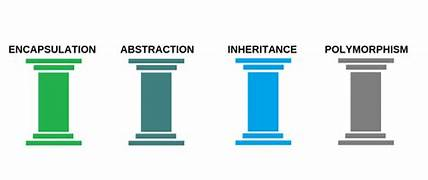
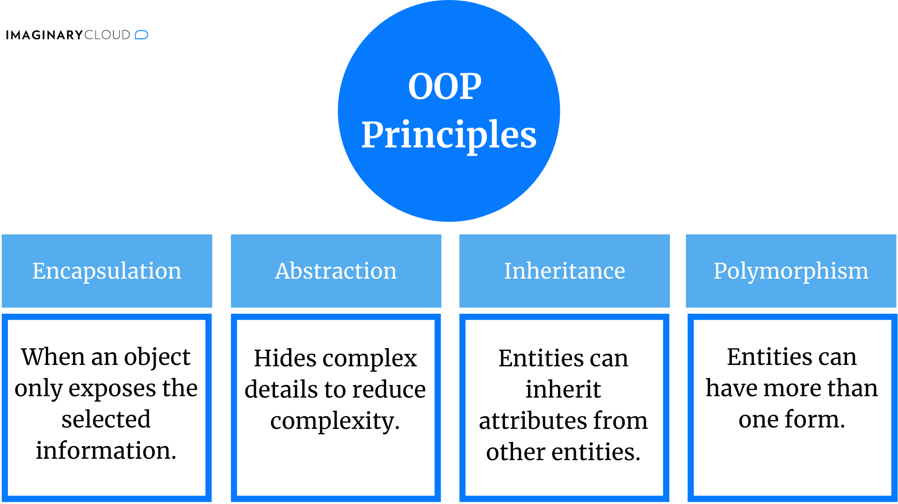

Object-Oriented Programming (OOP) is a paradigm designed to improve the structure and organization of software systems, making it easier to manage complexity in larger software projects.
This is the content for Slide 1. More details can be added here.
| Modularity | Reusability | Scalability and Maintenance | Data Security and Encapsulation | Real-World Mapping |
|---|---|---|---|---|
| OOP breaks down large problems into smaller, more manageable modules (objects). This modular approach improves code organization and simplifies maintenance. | Once a class or object is defined, it can be reused across different programs or parts of the same program. This avoids redundancy and reduces the amount of code developers need to write. | OOP systems are easier to extend and modify as the program evolves. New functionality can be added with minimal changes to existing code, making programs scalable. | OOP enforces data encapsulation, hiding internal details from external objects. This protects data and reduces dependencies between different components of the program, enhancing security and reliability. | OOP models real-world entities as objects, making the design and understanding of systems more intuitive. Classes define properties and behaviors that reflect real-world entities. |
Characteristic Features of OOP
 Classes and Objects:
Class: A blueprint or template for creating objects. It defines a datatype by bundling data and methods that manipulate the data.
Object: An instance of a class that represents a real-world entity with attributes (data) and behaviors (methods).
Usage of Object-Oriented Programming (OOP)
- Software Development: Used in applications from desktop to web, leveraging languages like Java, C++, and Python.
- Graphical User Interfaces (GUI): Ideal for creating interactive UI components like buttons and forms.
- Real-Time Systems: Models real-time entities in applications such as robotics and simulations.
- Database Management Systems (DBMS): Facilitates complex relationships in object-oriented databases and ORM tools.
- Game Development: Structures game logic and models characters and environments effectively.
- Web Development: Frameworks like Django and Spring utilize OOP for handling requests and managing data.
This is the content for Slide 4. More details can be added here.
Slide 5 Content
This is the content for Slide 5. More details can be added here.